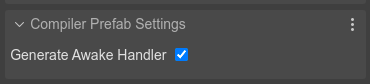
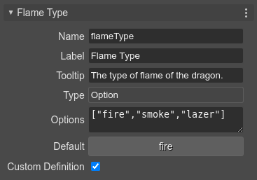

Initializing other properties
It’s possible you want to change other properties of the prefab instance, in dependence of the values of the user properties. For example, if the flameType property value is "fire", then you set the mass of the body to 50. Because the property values are not set in the constructor, you can listen to the scene-awake event and setup the body properties:
class Dragon extends Phaser.GameObjects.Sprite {
constructor(scene,...) {
...
/* START-USER-CTR-CODE */
scene.events.once("scene-awake", this.awake, this);
/* END-USER-CTR-CODE */
}
/** @type {"fire"|"smoke"|"laser"} */
flameType = "fire";
/* START-USER-CODE */
awake() {
// at this point, all objects in the scene are created
// and the user properties are set with new values
if (this.flameType === "fire") {
this.body.mass = 50;
}
}
/* END-USER-CODE */
}
If you enable the Generate Awake Handler flag in the Compiler Prefab Settings, the scene compiler will generate this code for you:
class Level extends Phaser.GameObjects.Image {
constructor(scene,...) {
// awake handler
this.scene.events.once("scene-awake", () => this.awake());
...
}
}
It is your responsibility to write the awake method.
The scene-awake event
The scene-awake event is not part of the Phaser API. It’s a custom event the Scene Editor uses as convention. When the scene compiler generates the code of a scene, it also generates the code for emitting the scene-awake event. This event is emitted just after all objects are created:
class Level extends Phaser.Scene {
...
editorCreate() {
...
// dragon
const dragon = new Dragon(this, 370, 218);
this.add.existing(dragon);
...
// dragon (prefab fields)
dragon.maxSpeed = 300;
dragon.flameType = "smoke";
dragon.onClickHandler = obj => this.selectDragon(obj);
...
this.events.emit("scene-awake");
}
...
}
As we mentioned in the previous sections, prefabs and user components can listen to this event for reading the values set to the user properties.
It is important that you keep in mind that if you create a dynamic prefab instance, and it requires the scene-awake event, then you should call it manually:
spawnDino(scene, x, y, flame) {
const dragon = new Dragon(scene, x, y);
dragon.flameType = flame;
// send the awake notification to the new object
scene.events.emit("scene-awake");
}
Because the scene-awake event is listened once in prefabs and user components, only the new objects will be notified.
As alternative to the scene-awake event, you can listen the Phaser.Scenes.Events.UPDATE event. It is emitted by the scene at every tick, so you just need to register the listener to be called once:
scene.events.once("Phaser.Scenes.Events.UPDATE", this.start, this);
Note that if you need to “awake” prefab before the game starts updating, you should listen to the scene-awake event.
The scene-awake event is also used by components, learn more about it.
Using properties with custom definition
You can set a user property with a Custom Definition:
This means, the scene compiler skips the definition of the property. For example, if you set the flameType as Custom Definition, the flameType property declaration isn’t generated. Instead, a flameType property initialization is included in the constructor:
class Dragon extends Phaser.GameObjects.Sprite {
constructor(scene,...) {
...
// the compiler adds this
this.flameType = "fire";
}
// the compiler skips this:
// flameType = "fire";
}
Then, you can write a custom setter and initialize other fields of the prefab:
class Dragon extends Phaser.GameObjects.Sprite {
constructor(scene,...) {
...
this.flameType = "fire";
}
/* START-USER-CODE */
set flameType(flameType) {
// update the body with the flameType
if (flameType === "fire") {
this.body.mass = 50;
}
}
/* END-USER-CODE */
}
Note that you don’t need to listen for the prefab-awake event anymore. Setting the flameType property will update the prefab state in the expected way. It’s possible you also need to define a getter for the flameType. If that’s the case, you can store its value in a new field, or compute it.